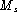
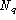

For reference purposes, this section lists the various formulae employed within the HTK parameter estimation tools. All are standard, however, the use of non-emitting states and multiple data streams leads to various special cases which are usually not covered fully in the literature.
The following notation is used in this section
N number of statesS number of streams
 number of mixture components in stream s
T number of observations
Q number of models in an embedded training sequence
 number of states in the q'th model in a training sequence
a sequence of observations
the observation at time t,
the observation vector for stream s at time t
the probability of a transition from state i to j
weight of mixture component m in state j stream s
vector of means for the mixture component m of state j stream s
covariance matrix for the mixture component m of state j stream s
the set of all parameters defining a HMM